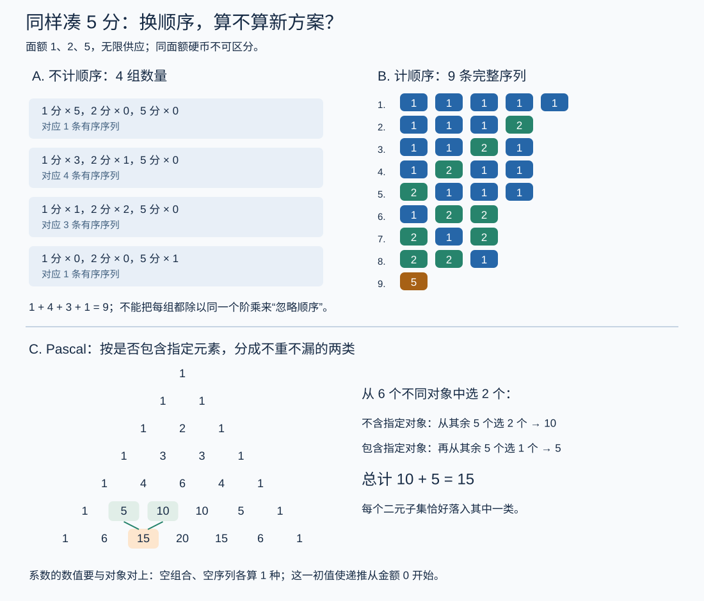

图论与组合 I · 计数：从容斥到生成函数
组合数学回答"有多少种"。本页是计数的兵器谱，按火力递增排列：基本原理 → 容斥 → 递推 → 生成函数（把计数问题变成幂级数代数——组合与分析的握手，数分 IV 的幂级数在此再就业）。

1. 基本武器
加法/乘法原理（分类相加、分步相乘）；排列 \(A_n^k = \frac{n!}{(n-k)!}\)、组合 \(\binom{n}{k}\)；可重复组合（隔板法）\(\binom{n+k-1}{k}\)——"\(k\) 个球放 \(n\) 个盒"四种变体（球盒是否可辨）是一切初等计数题的分类框架。
二项式定理与组合恒等式两板斧：代数法（展开对比系数）与组合双计数（同一集合两种数法）。样板：\(\binom{n}{k} = \binom{n-1}{k} + \binom{n-1}{k-1}\)（Pascal：按"含不含第 \(n\) 个元素"分类）；\(\sum_k \binom{n}{k}^2 = \binom{2n}{n}\)（Vandermonde：从 \(2n\) 人选 \(n\)，按前半选几个分类）。
鸽笼原理：\(n+1\) 物入 \(n\) 笼必有同笼——弱得不能再弱的前提，专出漂亮结论（例：任意 \(n+1\) 个整数中必有两个差被 \(n\) 整除——按余数入笼，概率 I 生日问题的确定性表亲）。
2. 容斥原理
（概率 I 加法公式的计数版；证明：每个元素被数的净次数 \(= 1 - (1-1)^m = 1\)，二项式定理一行。）
旗舰应用（错排数）：\(n\) 封信全装错信封的方案数——容斥扣掉"至少某封装对"：
全装错的概率 \(\to \frac1e \approx 36.8\%\)——与 \(n\) 几乎无关（10 封信与一万封信答案相同），组合数学第一名场面；\(e\) 的级数（数分 IV）在纯计数问题里现身。
3. 递推关系
把"规模 \(n\) 的方案数"用小规模表达。线性递推的特征根法（与 ode-02 常系数方程完全同构——差分方程即离散 ODE）：Fibonacci \(F_n = F_{n-1} + F_{n-2}\)，特征方程 \(x^2 = x + 1\)，根 \(\varphi = \frac{1+\sqrt5}{2}, \psi = \frac{1-\sqrt5}{2}\)：
（黄金比例从"爬楼梯计数"里长出来；\(|\psi| < 1\) ⇒ \(F_n\) 是 \(\frac{\varphi^n}{\sqrt5}\) 的四舍五入——增长率由最大特征根统治，ode-03/数值幂法/Markov 链的那句话第四次出场。）
4. 生成函数（计数的核武器）
定义：序列 \(\{a_n\}\) 的（普通）生成函数 \(G(x) = \sum a_n x^n\)——把整个数列打包成一个函数，计数运算变函数代数：
| 组合操作 | 生成函数操作 |
|---|---|
| 两类选择的组合（先 A 后 B） | \(G_A(x)\cdot G_B(x)\)（卷积——概率 IV 母函数同款机制） |
| "每种物品选若干"的背包 | 各物品因子连乘 \(\prod\frac{1}{1-x^{w_i}}\) 类 |
| 解线性递推 | 递推式 × \(x^n\) 求和 ⇒ 关于 \(G\) 的代数方程 |
样板一（找零钱）：用 1、2、5 分凑 \(n\) 分的方案数 = \(\frac{1}{(1-x)(1-x^2)(1-x^5)}\) 的 \(x^n\) 系数——"枚举"变"展开"。
样板二（Catalan 数）：合法括号序列数 \(C_n\) 满足 \(C_{n+1} = \sum_k C_k C_{n-k}\)（按最外层配对位置分类——卷积形！）⇒ \(G = 1 + xG^2\)，解二次方程 + 二项级数展开：
Catalan 数是组合的"\(\pi\)"：括号序列、二叉树形态、凸多边形三角剖分、不穿越对角线的格路……几十种问题同一个答案（栈的出栈序列数——CS 对账）。
🔗 对账：概率母函数（概率 IV）= 生成函数在 \(a_n\) 为概率时的特例（独立和→乘积即卷积规则）；特征函数是它的 Fourier 版；分治算法复杂度递推（主定理背后）同属递推家族。
5. 典型例题
例 1（隔板法） 方程 \(x_1 + x_2 + x_3 = 10\) 的非负整数解数：\(\binom{10 + 2}{2} = 66\)（10 球 2 板）。
例 2（容斥） 1–1000 中不被 2、3、5 任一整除的数：\(1000 - (500 + 333 + 200) + (166 + 100 + 66) - 33 = 266\)（Euler 函数思想的具体版——抽代 II 的 \(\varphi\) 认亲）。
例 3（生成函数解递推） \(a_n = 2a_{n-1} + 1,\ a_0 = 0\)（汉诺塔）：两边乘 \(x^n\) 求和得 \(G = \frac{x}{(1-x)(1-2x)}\)，部分分式展开（数分 III 的技术）得 \(a_n = 2^n - 1\)。\(\blacksquare\)
下一页：从"数数"到"结构"——图的语言：度、连通、树、Euler 与 Hamilton、平面图。